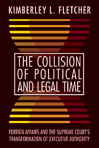

<HTML><head>
<meta name='robots' content='noindex,nofollow' /><script> (function(i,s,o,g,r,a,m){i['GoogleAnalyticsObject']=r;i[r]=i[r]||function(){  (i[r].q=i[r].q||[]).push(arguments)},i[r].l=1*new Date();a=s.createElement(o),  m=s.getElementsByTagName(o)[0];a.async=1;a.src=g;m.parentNode.insertBefore(a,m)   })(window,document,'script','//www.google-analytics.com/analytics.js','ga');   ga('create', 'UA-43183130-1', 'temple.edu');   ga('send', 'pageview'); </script><title>Kimberley L. Fletcher: The Collision of Political and Legal Time - Print</TITLE><link rel="stylesheet" href="../general.css" type="text/css"><SCRIPT LANGUAGE = JAVASCRIPT></SCRIPT></HEAD><BODY LINK="#3152A5" VLINK="#3152A5" ALINK=Gray BGCOLOR=White>
	
	<CENTER><P CLASS=intro><br>Explores the dynamic institutional relationship that historically exists between the President and the Supreme Court<br><br></P></CENTER><br>&nbsp;<!--none//--><Table width="100%" border=0 cellspacing=5><tr><td width="175" align="center"></td><td>
	
	<h1 class = "booktitle">The Collision of Political and Legal Time</h1> 
	<h1 class = "subtitle">Foreign Affairs and the Supreme Court's Transformation of Executive Authority</h1>
	
	<h3 class="author">Kimberley L. Fletcher </h3>
	
	<p class="info">paper EAN: 978-1-4399-1492-2 (ISBN:1-4399-1492-3)</br>$39.95, May 18, <font color=#990033>Available</font><br>
	<p class="info">cloth EAN:  978-1-4399-1491-5 (ISBN:1-4399-1491-5)</br>$99.50, May 18, <font color=#990033>Available</font><br><p class="info">Electronic Book EAN: 978-1-4399-1493-9 (ISBN:1-4399-1493-1)</br>$39.95, May 18, <font color=#990033>Not Yet Published Preorder</font><br><p class="info">290 pp, 6 x 9, 2 tables</p></td></tr></table></P></td></tr></table><BR>
	
	
	<BLOCKQUOTE>
		<p><i>"Professor Fletcher lends an American political development approach to the president's power in foreign policy. The rise of executive authority emerges as a form of institution building, with the architect being the Supreme Court. Operating in legal time, the Court has constructed, stabilized, and checked a major political order. </i>The Collision of Political and Legal Time <i> places foreign policy alongside domestic accounts of political development, and it makes us think once again about the institutional resources that make the Court an agent of change."</i><br/>&#8212;<b>Kathleen Sullivan</b>, Associate Professor at Ohio University and author of <i>Constitutional Context: Women and Rights Discourse in Nineteenth-Century America</i><br></BLOCKQUOTE>
	
	<P><p>How does the U.S. Supreme Court shape constitutional and political development? In <i>The Collision of Political and Legal Time, </i>Kimberley Fletcher answers this question by analyzing the key role the Court has played in interpreting presidential decision-making in the area of foreign affairs since 1936. She reconsiders the Curtiss-Wright <i> </i>Court, which instituted a new constitutional order that established plenary powers independent of congressional delegation. Fletcher also reexamines Japanese internment and detainee cases, demonstrating the entrenchment of the new constitutional order and how presidential ascendency becomes institutionalized. Other cases, such as <i>Youngstown, </i>illustrate how the Court, during a time of war, will check Executive power and authority. <br><br> <i>The Collision of Political and Legal Time</i> examines these cases and controversies in foreign policymaking through the twentieth and into the twenty-first centuries to show that the Court is not passive or constrained; it does not merely follow politics or the majority coalition. Through her nuanced analysis, Fletcher makes a larger argument about the role of the U.S. Supreme Court as an agent of change, which ultimately transforms power, shapes politics, and redirects history.<br>
		
		<P CLASS="top"><A HREF="#top">BACK TO TOP</A></P></p><P></P><P></b></p>
		
		<P><h2  class="inpageheading"><A NAME="excerpt"></a>Excerpt</h2><p><A HREF="http://www.temple.edu/tempress/chapters_2400/2455_ch1.pdf">Read Chapter 1 (pdf).</A><p><br><P CLASS="top"><A HREF="#top">BACK TO TOP</A></P></P>
	
	<P><h2  class="inpageheading"><A NAME="reviews"></a>Reviews</h2><p><i>"Supreme Court empowerment of independent presidential power rests on not only a series of judicial misinterpretations (such as John Marshall's sole-organ speech) but also a pattern of judicial deference to executive claims and assertions that lack a basis in evidence. Kimberley Fletcher's insightful and closely researched study,</i> The Collision of Political and Legal Time <i>, demonstrates how the Supreme Court has promoted presidential power in external affairs both beyond the Framers' intent and in conflict with express constitutional language."</i><br/>&#8212;<b>Louis Fisher</b>, author of <i>Supreme Court Expansion of Presidential Power: Unconstitutional Leanings</i><br><P CLASS="top"><A HREF="#top">BACK TO TOP</A></P></b></p>
<p></p>
	<p><h2 class="inpageheading"><A NAME="contents"></a>Contents</h2>
<P><span style="font-family: 'Verdana';font-size: 13px;" >
	Acknowledgments<br/><br/>
	1. The Court&rsquo;s Constitutive Role: Shifting the Balance of Power<br/>
	2. </span><span style="font-family: 'Verdana';font-size: 13px;font-style:italic;" >Curtiss-Wright</span><span style="font-family: 'Verdana';font-size: 13px;" >: The Court&rsquo;s Dynamic Role<br/>
	3. The Court Defines the Legal Narrative of Japanese Internment and Exclusion<br/>
	4. Steel Seizure: A Practical Approach to Presidential Power<br/>
	5. </span><span style="font-family: 'Verdana';font-size: 13px;font-style:italic;" >Dames and Regan</span><span style="font-family: 'Verdana';font-size: 13px;" >: Engineering a Shift in Authority from Congress to the President<br/>
	6. Detainee Cases: A Definitive Statement of the President&rsquo;s Monopoly in War Making<br/>
	Conclusion: Constitutional Change Instigated outside the Legalized Constitution <br/><br/>
	Appendix: Tables<br/>
	Notes<br/>
	Selected Cases Cited<br/>
	Index</span></P><P CLASS="top"><A HREF="#top">BACK TO TOP</A></P></p>
	<P><H2  class="inpageheading"><A NAME="author bio"></a>About the Author(s)</H2>
		<p><b>Kimberley L. Fletcher </b>is an Assistant Professor of Political Science at San Diego State University.<br>
			
			<P CLASS="top"><A HREF="#top">BACK TO TOP</A></P></P></P>
<P><h2 class="inpageheading"><a name="subjects"></a>Subject Categories</h2> <p>
	<a href="http://www.temple.edu/tempress/political.html" target="_top">Political Science and Public Policy</a> <br>
	<a href="http://www.temple.edu/tempress/law.html" target="_top">Law and Criminology</a> <br>
	<a href="" target="_top"></a> <br><a href="" target="_top"></a> <br><a href="" target="_top"></a> </p></P><P></P>

<P CLASS="top"><A HREF="#top">BACK TO TOP</A></P></td><td width=2%>&nbsp;</td><td width=5>&nbsp;</td></tr></table><BR><font face="Arial" size="1"><a href="copyright.html" OnMouseOver="window.status='Web Copyright Policy';return true;" OnMouseOut="window.status=''" TITLE="Web Copyright Policy">&copy;</a> 2018 <a href="http://www.temple.edu" target="new" OnMouseOver="window.status='Link to Temple University home page';return true;" OnMouseOut="window.status=''" TITLE="Link to Temple University home page">Temple University</a>. All Rights Reserved. This page: http://www.temple.edu/tempress/titles/2455_reg.html</font></BODY></HTML>                    
